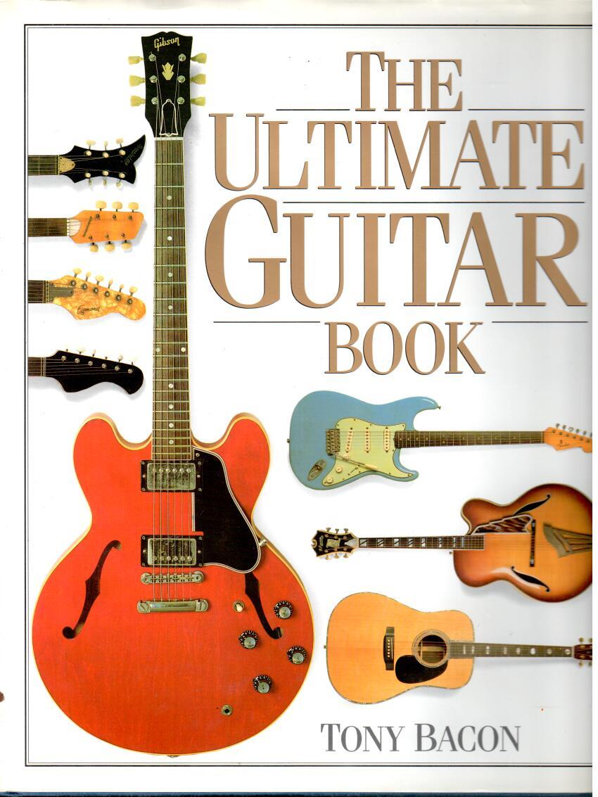

Fine violins, violas, and cellos.
The Philadelphia bench
Frederick W. Oster Fine Violins specializes in fine stringed instruments. The shop lists violins, violas, cellos, and the matching bows.
Repair and restoration sit next to appraisals for insurance, tax issues, charitable donations, and estate taxes. They write that they have moved a few times over the years.
